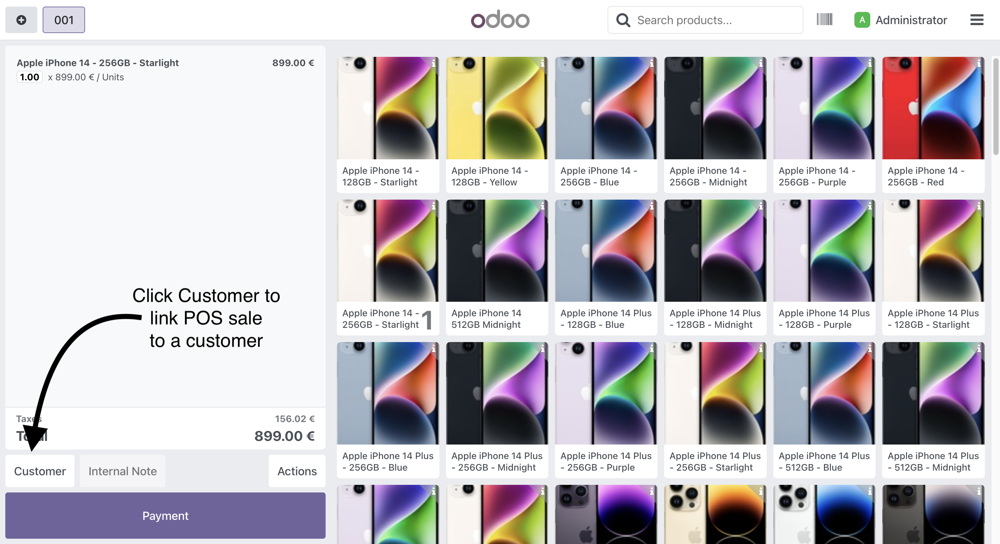
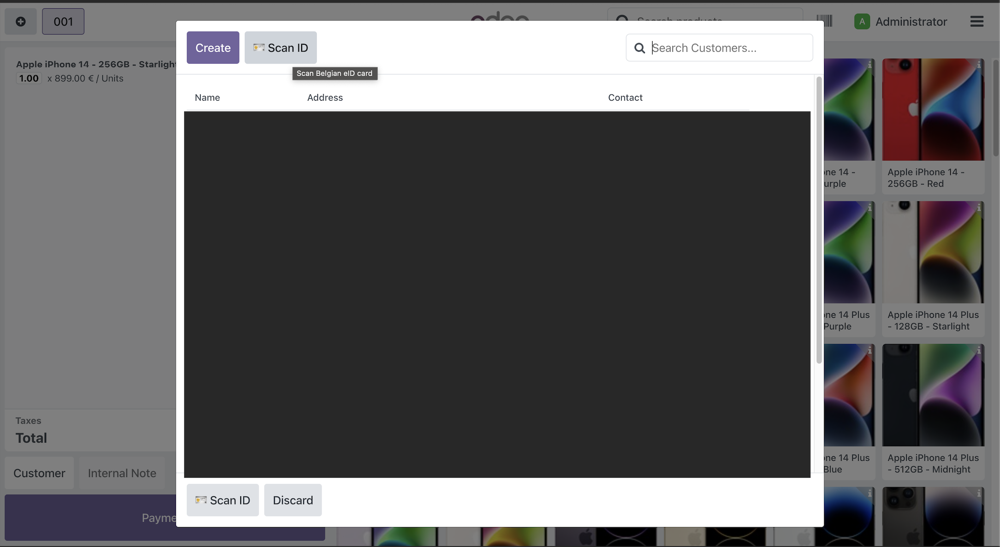
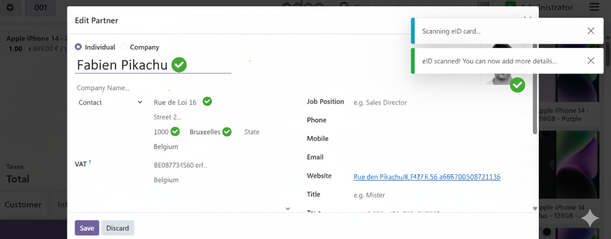

After scanning the eID card, the customer form opens automatically, allowing you to review and complete additional information.

This is a personal open-source project shared with the Odoo community.
For support, bug reports, or feature requests, please visit: